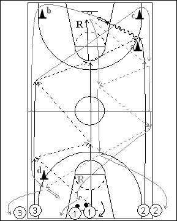

Catégorie : FASTBREAK (Fb-013)
Déroulement
- Trois files de joueurs à une baseline. Les ballons sont dans la file du milieu.
- Le premier joueur 1 passe au premier joueur de la file 3 qui lui remet. 1 repasse à 3 qui lui rend à nouveau le ballon. La cinquième passe est faite du côté droit au premier joueur de la file 2 juste après son passage à hauteur du cône a. 2 réalise le lay-up et repart du côté opposé en passant derrière les cônes b et d. Après sa dernière passe à 1, 3 contourne le cône c et repart également vers le côté opposé. 1 effectue le rebond et la première passe à 3 qui lui remet le ballon. De nouveau passe aller-retour entre 1 et 3 et dernière passe pour un lay-up à 2.
- 1 va en 2. 2 va en 3, 3 fait le deuxième rebond et va en 1.
Coaching points
- C’est donc le même joueur qui effectue les deux lay-ups que l’on peut remplacer par des jump shoots.
- On peut effectuer un, deux, voire trois aller-retour.